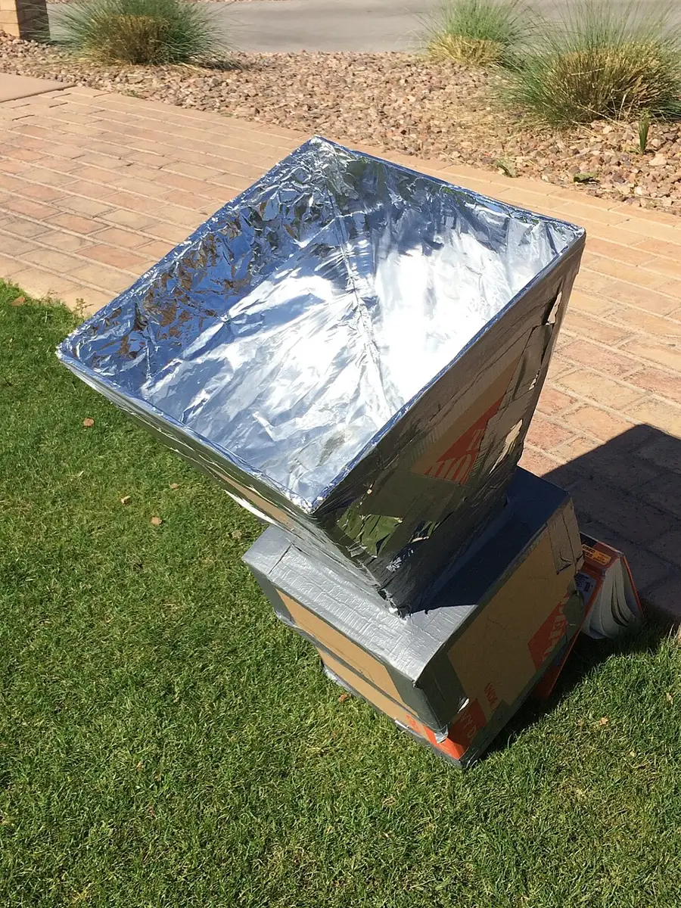

Solar Oven Temperature Trials
Teens build box solar ovens and trial them like scientists: one variable at a time, temperatures logged by the minute, the sun as the only power source.
Before you begin
- Ages
- 13–14
- Group
- 2–16 kids
- Time
- 45–60 min
- Where
- Outdoors
- Prep
- Some prep needed

Setup
Fix the base oven before you fix the trials, and fix it in writing: one base design, drawn on the log's first page with its dimensions, its lining, its glazing and its flap angle as the session's control. Every team builds that oven first, however strong their own ideas are, because a variable can only be trialled against a control the whole session shares. Test the thermometers at setup in the session's honest way: side by side in the same shaded air, read aloud, any instrument disagreeing with its neighbours by more than the log's stated tolerance is replaced before a trial depends on it. Choose the trial day by the forecast the way experimenters choose it, a day of real sun with the session set across its strong hours, and agree the postponement law now: a clouded trial day is postponed, not conducted at half-evidence, and the log records the decision with the forecast that caused it, because the first scientific judgement this record teaches is knowing when the apparatus, here, the sky, is not in a state to answer questions. Set the log's discipline before a box is opened: temperatures read at the stated minutes by the stated reader, called aloud, entered once, never improved in the retelling.
Materials
- oven boxes the teams build from the site's agreed stock (a sturdy box per team, dark lining material, clear film or a glass sheet for the glazing, reflective card or foil for the flap, the same base kit for every team, because a trial in which the kits differ is a trial of the kits, not of the variables)
- one thermometer per oven that can be read without opening it, or a probe the adult has tested in the oven's range (the trial's whole instrument, checked against a known reading at setup, because a log kept on a lying thermometer is fiction with decimal places)
- the trial log (one book for the session: the control run first, then one page per variable trial, the variable changed, everything held constant listed and signed, temperatures by the stated minutes, sun and cloud noted in the same hand)
- the shade-and-rest station (water, shade and the session's timetable kept by the log-keeper. A solar trial is an hour spent attending to sunlight, and the crew's management of its own exposure is part of the experiment's honest conditions)
Steps
- The framing, ovens still in pieces, the sun already doing the day's work overhead: 'Sunlight is slow; the log is how you know it is working. Nothing in these ovens will flame, boil dramatically or announce itself. Heat will arrive by degrees, in silence, and the only witnesses it will have are a thermometer and a crew honest enough to write down numbers that bore them. So we trial like scientists, which is a stricter thing than building like inventors. First we build the control oven, all of us, the same, and we run it and log it, so the session owns a truth to compare against. Then each team changes ONE variable, the flap's angle, the lining's colour, a second glazing layer, insulation at the walls, states in the log what they expect it to do, and runs the identical trial. Everything else held constant, and held constant is a list we sign, not a feeling we have. A variable that wins on a cloudy ten minutes has won nothing, and this log will say the cloud in the same ink as the temperature, because conditions are data. By the end, the session will know one true thing about sunlight and boxes that it did not know this morning, and will be able to prove it from the book.' The control design is read aloud entire from the log's first page, and building begins.
- Building and the control run, the session's foundation of fact: teams build the control oven to the drawn design, checking dimensions against the page rather than against each other's boxes. A control copied from a neighbour's near-enough is a second variable smuggled into the foundations. The ovens are set out in the session's full sun on ground the adults have walked, angled and aimed by the log's stated method, and the control run is taken entire: thermometers in by the stated placement, the clock started by the keeper, temperatures called and entered at the stated minutes by the stated reader, sun and cloud noted in the margin at every reading where the sky changed its mind. Teams that finish building early do not improvise improvements while they wait. They re-check their oven against the design, seal the gaps the design forgot to mention in the log's build notes, and watch the control discipline being established, because the waiting is where most variables are born, and this session writes its variables down and trials them in order instead of leaking them into the control.
- The variable trials, one change at a time, argued from the log: each team states its variable in the book before touching its oven. The single thing to change, the prediction in one sentence with a number in it where a number can honestly be offered, and the held-constant list signed by the team and countersigned by a rival team's checker, because constancy certified by an opponent is constancy a stranger can trust. The trial runs the control's identical shape: same placement discipline, same reading minutes, same reader where the session can manage it, and the result is entered against the control's numbers side by side, with the sky's behaviour in the margin given the same respect as the thermometer's. A trial interrupted by serious cloud is not salvaged by arithmetic: it is stopped, entered as interrupted with its minutes and its cloud, and re-run if the day allows. The log has a word for such trials, void, and using it is a scientific success the framing names as such, because a session that can declare its own evidence void is a session whose kept evidence means something.
- The reckoning, at the table in the shade, the log open at the whole day: the keeper reads the control and every kept trial aloud in the session's order, and the results are ranked by the only standard the framing set, the logged peak and the logged climb, under the logged conditions, with every team's prediction read back beside its result, kept and cut alike. Winners are named precisely: a variable that beat the control by a margin the instruments can honestly carry is declared the session's finding, in one sentence the keeper writes in the book's closing lines, and a variable that matched its team's hopes inside the margin of weather and thermometers is declared unproven, which the book treats as a respectable verdict and the framing defends aloud. The session also names its best failure with ceremony, the trial whose honest log taught the room the most, void trials eligible, because a young scientist's relationship with a void trial decides what kind of old scientist they become, and this room intends to raise the kind who can say void and reach for the book again.
- Closing, the ovens cooled in the shade and the finding stated standing: the ovens are moved out of the sun by their teams, an unattended working oven is left to no afternoon, however gentle its heat, opened only when the keeper's last reading says they may be handled as the safety page directs, and inspected for what the day did to them: film slackened, foil dulled, lining scorched at a focus point, each entered in the build notes as the design's next edition's instructions. The tell-back is said with the log open at the finding: 'This morning sunlight was weather. It is a measured power in this book now: a control oven that climbed as the log says it climbed, variables tried one at a time against it, predictions written before they were tested, a void trial declared void without flinching, and one finding the whole session can state in one sentence and prove from one page. Sunlight is slow. The log is how we know it worked, and the log, not our enthusiasm, is what the next crew will build on.' The ovens, thermometers and log are stored together, the finding's sentence copied onto the log's cover, where the next trial day will find the whole experiment in one place.
Variations
Easier: A single-oven version (a small crew or a short bright window): one control oven built entire, one variable trialled entire, the whole discipline, control, prediction, held-constant list and reckoning, at the smallest size that still earns the word trial.
Harder: A cooking-proof version (a session whose trials have earned it): the winning design from the log, and only from the log, is used to melt or warm the simple test food the adults have approved for the day, temperatures still logged to the bite, because a proof you can taste is a fine servant of data and a poor replacement for it.
Safety
Heat sets this record's laws even though its heat arrives slowly: oven interiors are tested with the thermometer, never a hand. A focused oven's floor can be far hotter than its air reading suggests and a hand learns that once, which is once too often; ovens are opened by their teams only at the keeper's call, angled away from faces, because the day's trapped heat leaves an opened oven in one warm breath and eyes are not its audience. Reflective flaps and glazing are handled by their edges, foil's cut edge is folded under at building before it can find a finger, and no maker looks at the sun through a flap, a glazing sheet or any reflected path to check an aim. Aiming is done by shadows, always, a law the framing states and the keeper enforces without exception, because the instrument this experiment cannot replace is the crew's eyesight. The session is an hour attending to sunlight and its conditions are managed as such: shade and water are at the station from the first building minute, the timetable builds in the reckoning's shade as rest and not as reward, hats and the site's sun practice are the day's ordinary dress, and any member who feels the heat as illness, headache, nausea, dizziness, sits out in the shade and tells the adult at once, with the log noting the crew change the way it notes a cloud: as a condition, without blame. Scissors and craft knives, where the build uses them, follow the site's ordinary tool laws at the building table, and a finished oven is never left working in the sun unattended at the day's end, cooled, in the shade, stored, as the closing directs.
Source: Wikipedia, en.wikipedia.org
Inclusion notes
A temperature trial staffs its honours across every kind of attention: the log-keeper, reader of the stated minutes, caller of temperatures, keeper of the conditions margins and the void stamp, runs the session's truth from a seat in the shade at its centre, and that seat is the experiment's highest office, because a trial is only ever as good as its log. Building is table-and-ground work that divides by strength and reach as teams agree it: measuring and marking, cutting to a line, folding, glazing, sealing, each a real craft the design depends on, and the held-constant checker's role, certifying a rival team's list, is an office of pure judgement held at full standing by whoever the session trusts with a signature. Readings can be taken by probe displays read aloud, by photographs of thermometer dials checked at the table, or by a partner's called numbers entered by the keeper. The ink is the same, because the trial grades variables, not eyesight. The session's timetable is published in advance with its shade rest built into the design, the site is chosen for step-free access to the sun the experiment needs, and there is always, in any honest yard, a sunny patch the whole crew can reach, which the adults find at setup rather than apologising for at the framing.
Tried this? Rate it
Your ratings live in this browser only. Nobody else can see them. There are no community ratings here; every star on this card is yours.
Rate this activity, add a note, or write a reflection
Quick reflection
Optional, saved with your rating, and exported with "Copy my week".
Full activity card,